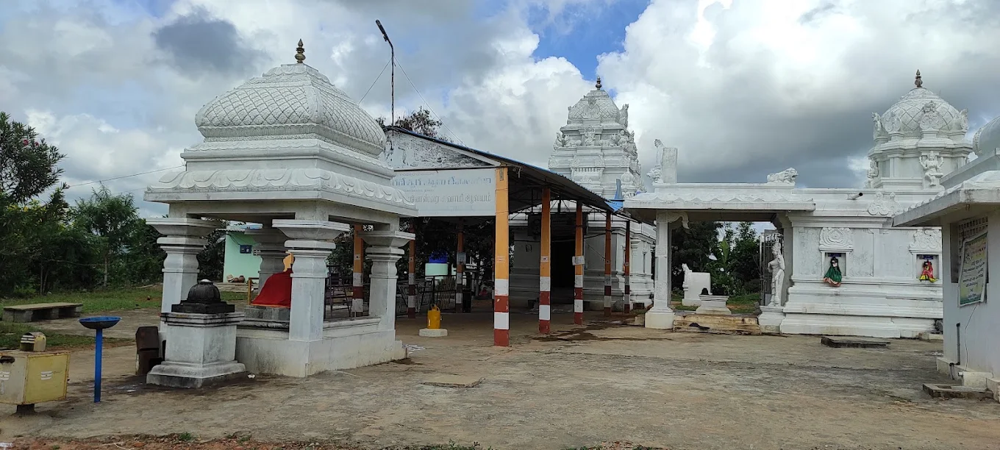

Temple Details
- Deity: Lord Shiva (Karaneeshwarar)
- Temple Type: Ancient Shiva Temple
- Location: Near Bazaar Street, Uthukottai
- Timings: 6:00 AM – 12:00 PM & 4:30 PM – 8:00 PM
- Special Days: Pradosham, Maha Shivaratri
- Contact: +91 94444 11223 (Temple Caretaker)
About the Temple
Karaneeshwarar Temple is one of the ancient temples in Uthukottai dedicated to Lord Shiva. The temple
is known for its peaceful ambiance and traditional rituals, drawing devotees from nearby villages.
Rituals & Events
- Daily Pujas and Abhishekam
- Pradosham Celebrations Twice a Month
- Special Annadhanam on Festival Days
Facilities
- Shoe Stand
- Drinking Water
- Rest Area for Devotees
- Pooja Item Shops Nearby
Location
Address: Karaneeshwarar Temple, Near Bazaar Street, Uthukottai, Tiruvallur District,
Tamil Nadu
View on Google Maps
